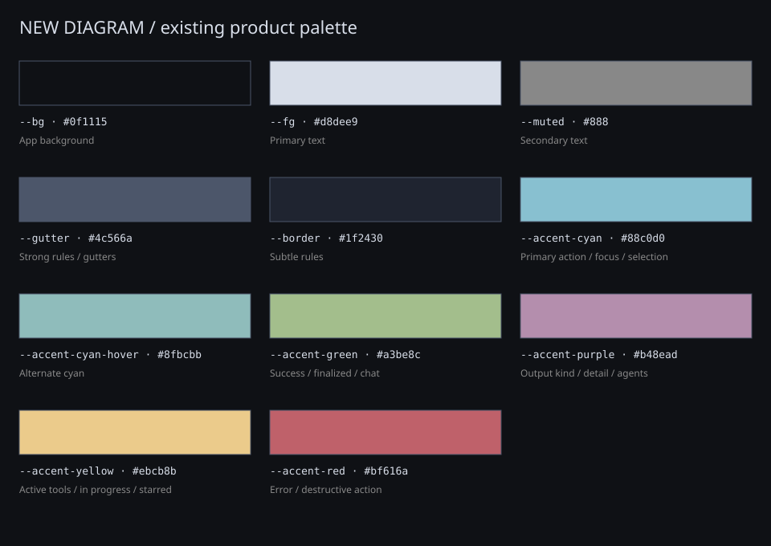

NEW DIAGRAM
design system / September 2026
The existing system, ready to iterate.
A visual baseline drawn from the product's actual CSS. These are representative specimens with fictional content. Hover controls and use Tab to inspect focus. Component interactions below are local demonstrations.
01 / Palette
Eleven existing root colors. Syntax highlighting retains its own palettes.

02 / Typography
Fonts resolve from local system stacks. The product supplies no font binaries; see the font README before matching this in a design tool.
Interface hierarchy
System architecture
Monospace eyebrow / 10px
Character geometry
+------------+ +----------+ | Workspace | --->| Diagram | +------------+ +----------+
Diagram: 13px / 1.4, monospace.
Source: 12px / 1.55. Markdown: 13px / 1.5.
03 / Controls & states
Actions
Hover adds cyan emphasis. Keyboard focus uses the existing outline. Active tools use yellow.
Status and output kind
Unable to generate. Update the prompt and try again.
Ready for local interaction previews.
04 / Workspace patterns
Actual pane tab, diagram selection, and source line classes. Canvas geometry here is illustrative; it does not run the product's selection engine.
+---------------+ +---------------+ | Import | ---> | Representation| | Validate | | Revise | | Save | | Explore | +---------------+ +---------------+
Source / dark-plus
Assets / live text and procedural paths
The app uses HTML text for its mark and glyph controls, plus SVG paths for connectors. These SVGs are derived conveniences for design files.
05 / Dialog and form
An inline import-dialog specimen. This does not act as a modal or upload data.
Import artifact
06 / Terminal Markdown
The renderer's extracted stylesheet runs in a separate document, as it does in the product. Code fences use the bundled Catppuccin Mocha theme.